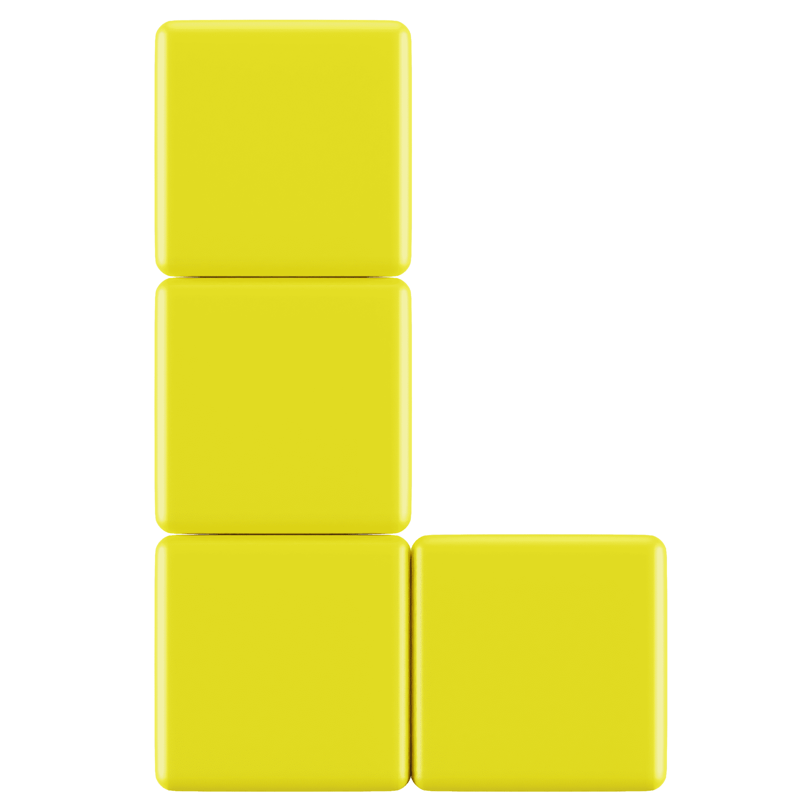
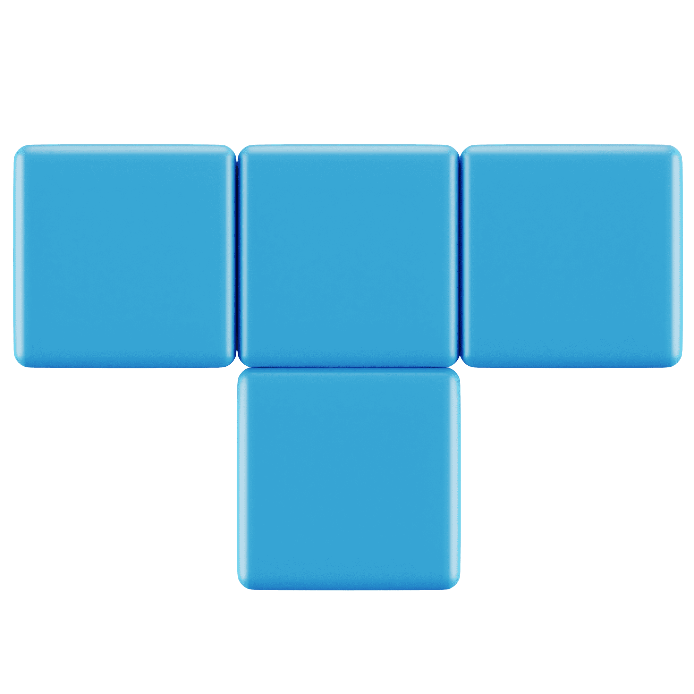
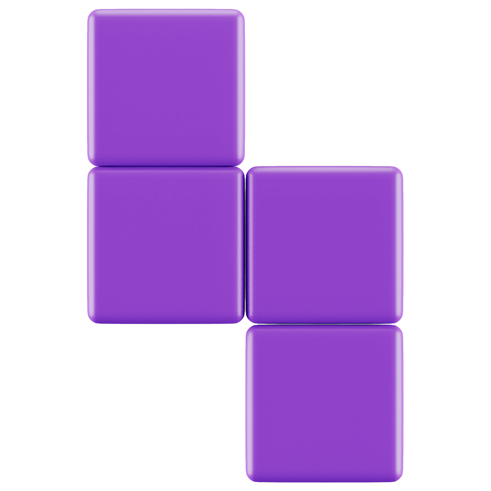

Regras

Goal
Use suas habilidades de organização para preencher a linha com os blocos a fim de completá-la e eliminá-la, avançando no jogo.

Score
- ☆ 10 xp - por bloco
- ☆ 100 xp - por linha completada

GameOver
Empilhar os blocos até o limite superior da tela de jogo.